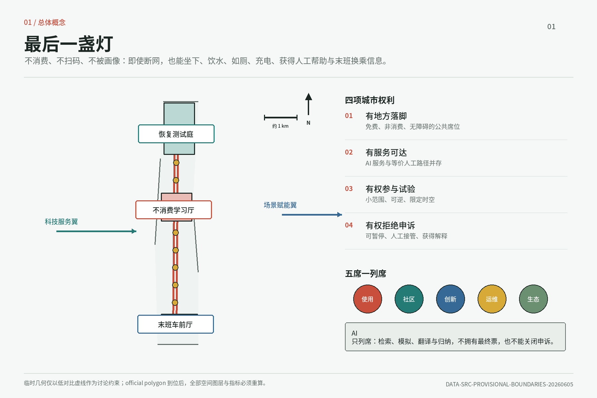
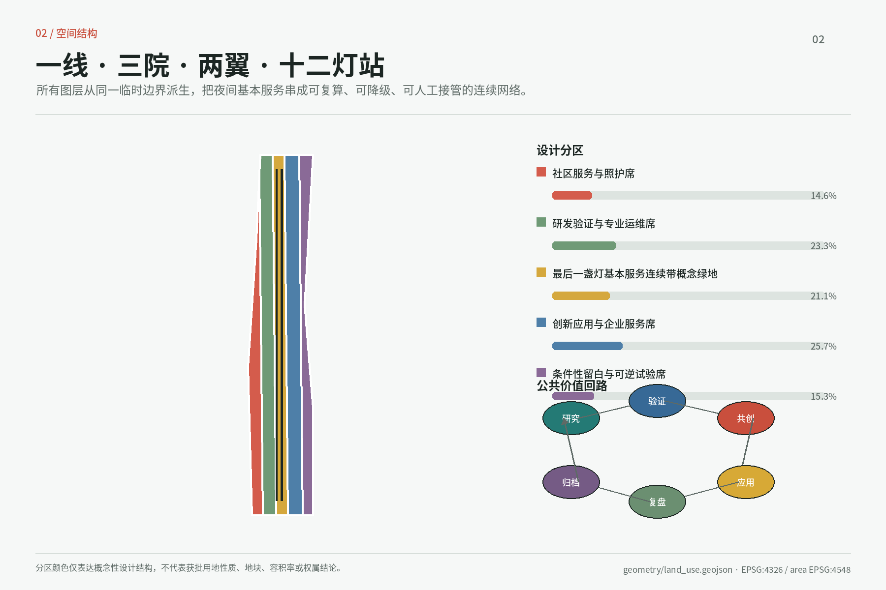
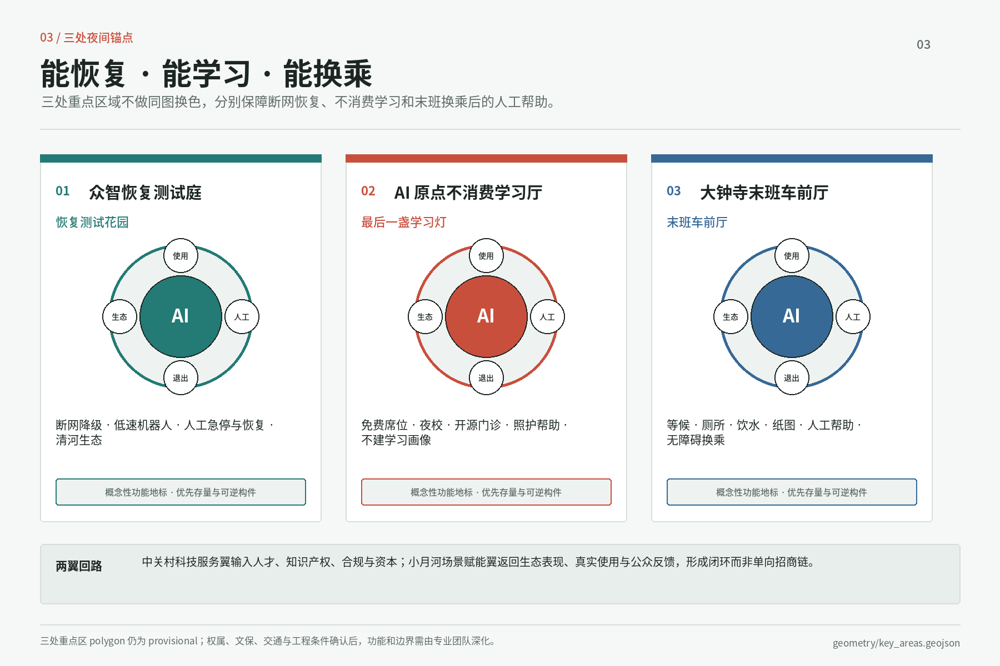
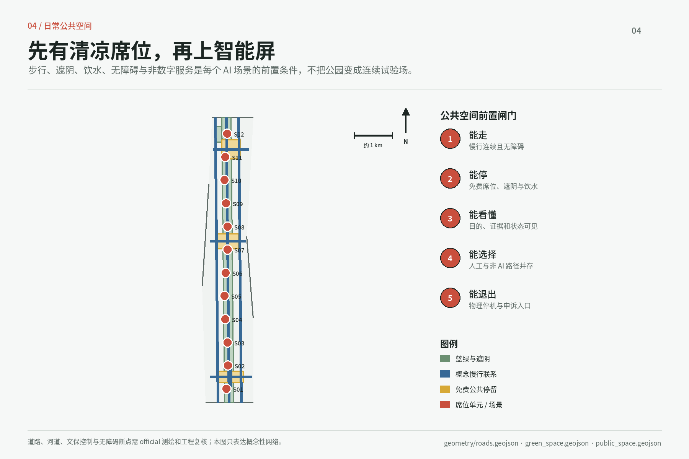
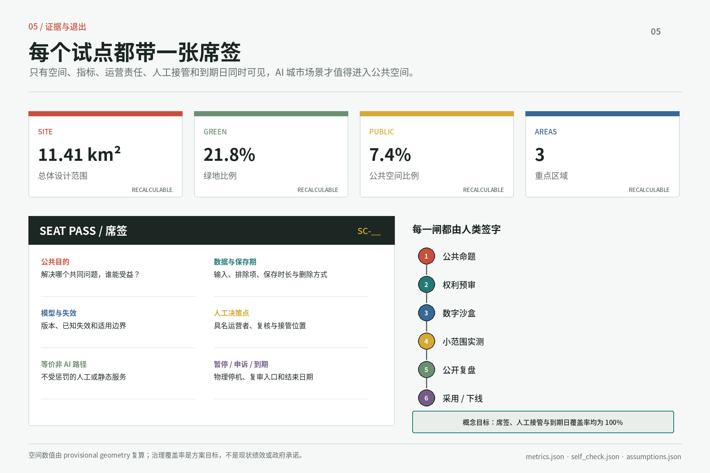

总览地图

三层范围 · 用地分区

重点区域

交通慢行 · 蓝绿公共空间

建筑 / 更新项目: 优先使用存量空间和可逆构件；精确拆改留结论必须等待 official 现状测绘、权属和工程条件。
核心指标
site_area_sqm11.41 km²
green_ratio21.8%
public_space_ratio7.4%

AI 场景
| ID | 席位 | 空间 | 人工边界 |
|---|---|---|---|
| SC-01 | 青年落脚席 | 不消费学习厅 | 资格判断必须由人完成 |
| SC-03 | 开源门诊席 | 不消费学习厅 | 专家签字后才能过闸 |
| SC-06 | 断网恢复测试席 | 恢复测试庭 | 现场操作员 + 物理急停 |
| SC-07 | 模型可信席 | 恢复测试庭 | 版本化证据与失效边界 |
| SC-10 | 小月河养护席 | 场景赋能翼 | AI 只生成人工工单 |
| SC-11 | AI 匿名试用席 | 末班车前厅 | 匿名模式 + 人服申诉 |
| SC-14 | 城市申诉席 | 全带 | AI 无权结案 |
任务覆盖 · 自检状态
agent.1agent.2agent.3agent.4agent.5agent.6
提交包对齐正文、GeoJSON、指标、专业标准、设计深度证据与中英展示；最终状态以 deterministic self-check 为准。
来源
DATA-SRC-OFFICIAL-ANNOUNCEMENT-20260509
DATA-SRC-AGENT-TASKBOOK-20260518
DATA-SRC-MOHURD-URBAN-DESIGN-MEASURES
DATA-SRC-MNR-LAND-USE-CLASSIFICATION-202311
假设
official polygon、控规、权属、文保、道路和市政资料尚缺；受影响的图层、指标和实施判断必须重算或由专业团队确认。